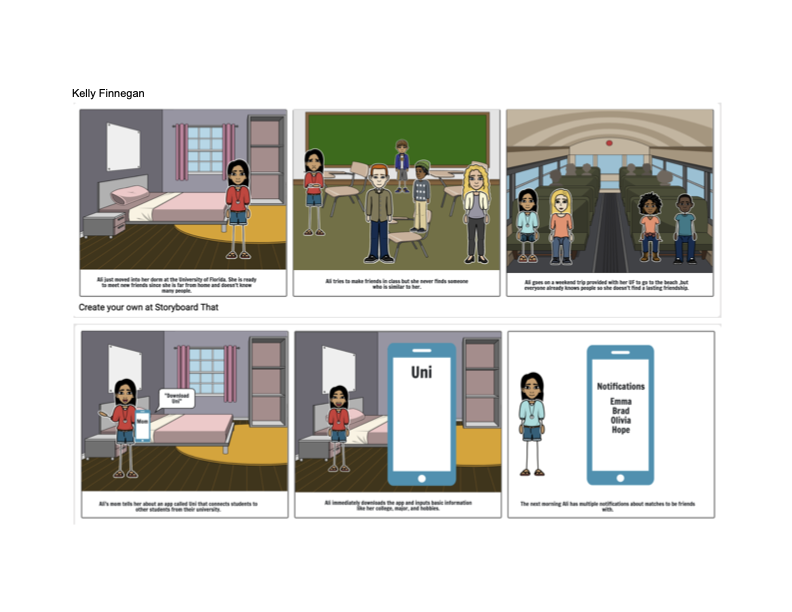
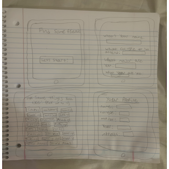
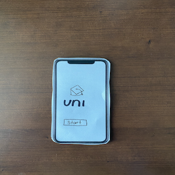
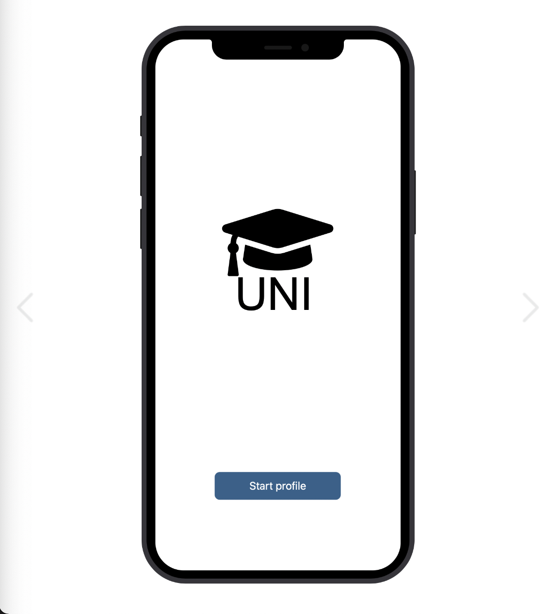

Problem-Statement:

New students around campus are frustrated because they feel like they cannot find people they connect with. Our solution should provide users with ways to meet new people that can be longtime friends.
Affinity Diagram:

This is a brainstorm of all things related to college students making friends from why it's hard to make them to how to advertise the app.
five personas for uni:

five different personas of college students that could possiably want to use the uni.
five StoryBoards for uni:
five different storyboards to show the possible people who would need the app and why.
Sketches
Rough drafts of how the app may look.
Paper paperprotoype
A walk through of the potential look of the UNI app.
Hi-Fi paperprotoype
A walk through of the tasks and the outcomes that can be preformed on the uni app.